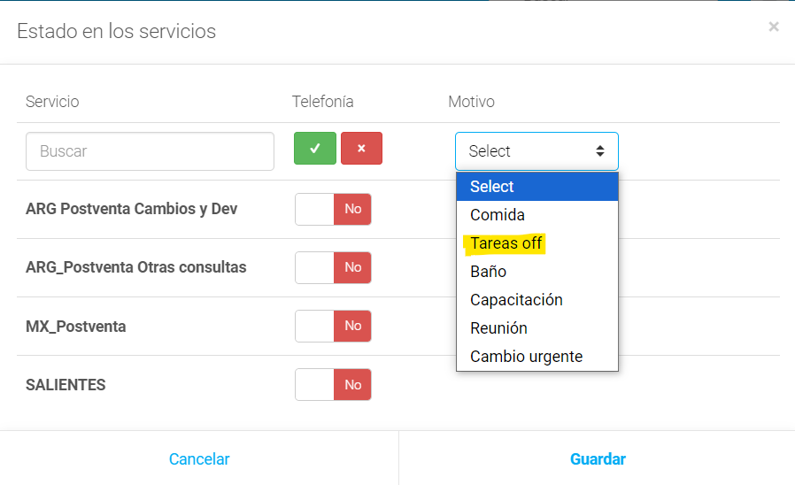
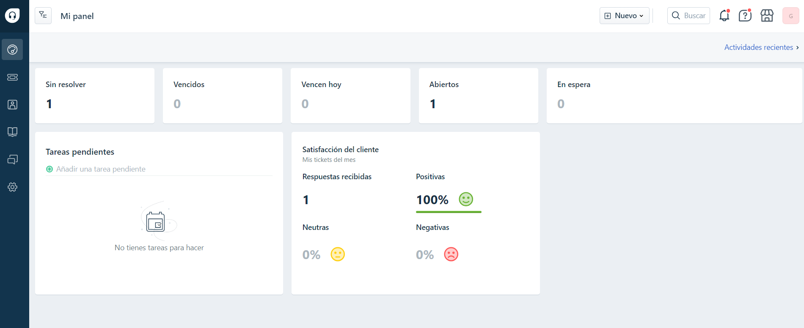
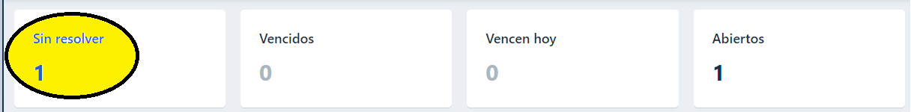
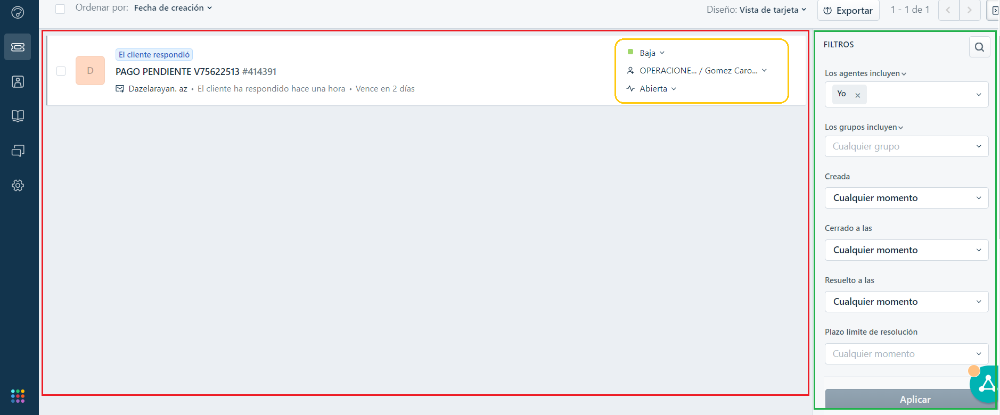

Tenemos que loguearnos en Numintec y cambiar el estado a Tareas off.
Desde el teléfono rojo vamos a ingresar a la pantalla para cambiar y guardar el nuevo estado

Vamos a abrir todas nuestras herramientas de trabajo.
Al comenzar nuestra gestión es necesario hacerlo siguiendo un lineamiento unificado para lograr mejores resultados.
Teniendo en cuenta nuestra experiencia este seria el orden más adecuado:
Verificacion de mails op (la idea es que puedan hacer un vistazo rápido para identificar en base al asunto si hay alguna nueva bajada o pendiente urgente)
***Nuestra tarea principal y prioritaria siempre es la emisión de vuelos***
Hoteles
Cola 50 (ya que implican un cobro generado al pax)
Cola 72 (ya que pueden caerse los lugares tomados)
Cola 23 (ya que pueden haber errores de emisiones automaticas)
Cola 30/31
Devos/Adms
Rechequeo mail op y fd
Canjes
Manejo de FD (freshdesk)
El FD es nuestra vía de comunicación con los pasajeros a través de mails.
Todos los sectores tienen acceso a esta plataforma ya que tenemos el historial de los pasajeros y sus diferentes casos.
Al ingresar vamos a entrar a directo al panel central.
Acá podemos ver la cantidad de fd que tenemos Sin Resolver (ya sea Abiertos o Pendientes de respuesta) y las calificaciones que nos ponen los pasajeros.



Recuadro ROJO
Nos muestra todos los casos pendientes de respuesta con el detalle del estado actual
Recuadro NARANJA
Indica:
Prioridad del caso: BAJA/MEDIA/ALTA/URGENTE
Agente y grupo al que pertenece
Estado de respuesta: PENDIENTE/RESUELTO
Recuadro VERDE
El filtrador permite buscar, modificar y cerrar fd de acuerdo al caso.
Tambien podemos filtrar por cualquier agente y grupo
***Tips y puntos a tener en cuenta para trabajar los fd***
Para que cuente en nuestra productividad siempre tiene que estar asignado a Grupo OPERACIONES
Si algún caso aún está en proceso de resolución, el estado debe ser PENDIENTE
Para trabajar los casos de manera ordenada, debemos guiarnos por la prioridad del caso
Para finalizar el caso, se debe pasar a estado RESUELTO
Manejo de admins pendientes control AE
AE es parte fundamental para el cierre de un pedido ya que es la tarea de verificación y validación de los datos que ingresan por nuestra web.
Para poder hacer un trabajo eficiente desde nuestro sector es clave saber cuáles pedidos podemos procesar en base al estado inicial de la reserva
En los siguientes casos NO se avanza con la gestión:
Estados: "Forzar compra pendiente" y "Pago seguro"
El resto de casos, si permite nuestra gestión y avance de la siguiente manera:
Si el estado es OK AE, se emite y envia confirmación al pasajero
Si esta en "Alerta", se emite, se carga comisión, tickets y servicios, se coloca TAG PRIORIDAD 1
Para ver más detalles de la operatoria de AE dar clik Acá
Bankias
Se considera bankia a toda aquella reserva que tiene un trabajo de recontacto con el/los pax para avanzar con el cobro y emisión.
Estos pueden ser por:
TCR
Tramos HX
Bin no aplica
Error de equipaje
Si se presenta cualquiera de los casos anteriores lo primero que debemos hacer es cargar el tag bankia, anular el cobro (si es posible) y comunicarnos con el pax
El pax tiene que saber el estado de su reserva y nosotros cumplimos con informarle
Teniendo en cuenta que para que la empresa siga creciendo y nosotros por consecuencia debemos intentar convertir toda reserva en venta.
Por esta razón, y sabiendo el tiempo que deben invertir en el cierre del pedido, se decidió poner un incentivo por cada admin que pasen a vendido.
Condiciones para que se pague ese plus
***Contacto telefónico*** Si o si tiene que haber un llamado (real jaja) de contacto con el pax o en su defecto 2 intentos de contacto
Tiene que estar cargada la información completa del pedido en la planilla de operaciones